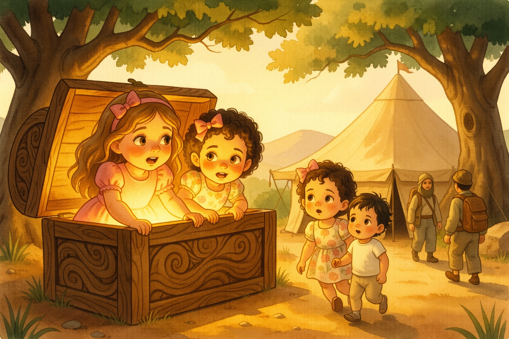
A Parasha Book · Parashat Vayera
וַיֵּרָא
Three Guests and a Boy Named Laughter
starring Aviya, Tzofia & Lielle
Meet the explorers
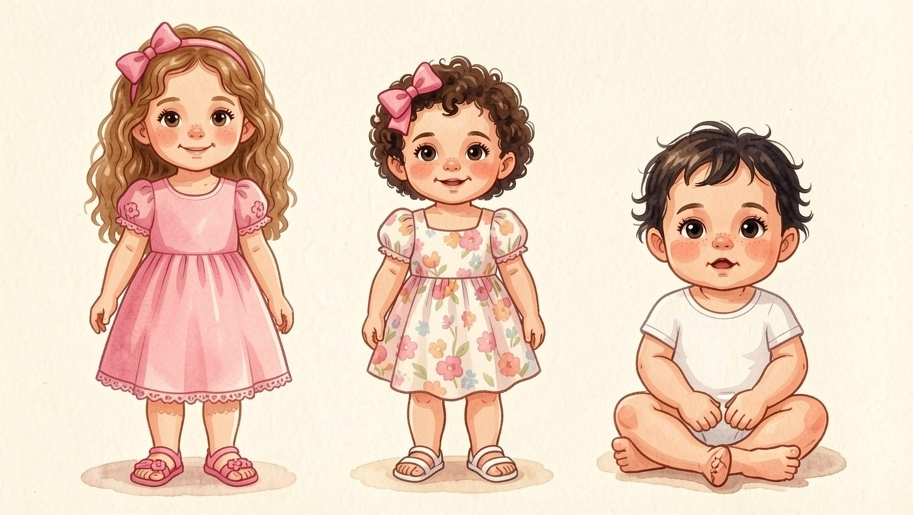
Aviya, Tzofia & Lielle are about to climb into Parashat Vayera (Genesis 18:1–22:24).
Everything on these pages comes straight from the pesukim — the plain meaning, the peshat.
Each picture page is followed by the words of the Torah it comes from, in Hebrew and English, and a question to look for in the text.
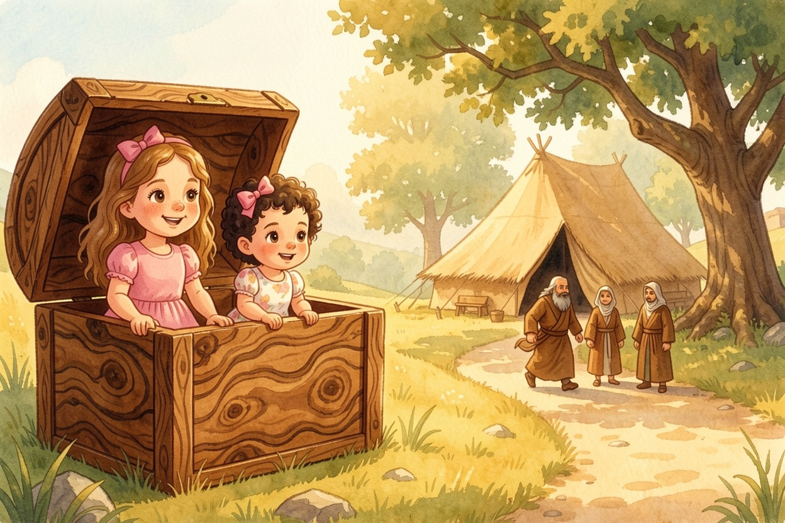
1Into the Parsha Box
Bereshit 18:1-5Into the Parsha Box
Every Friday night, the Parsha Box sat on the Shabbat table: a little carved wooden box with a lid that opened only when you were ready to listen. Tonight it was warm to the touch. Aviya lifted the lid — and the box grew and grew until it was big enough for all of them to climb inside. Whoosh! When the box stopped, it was perched on a hill above a big tent by the oaks of Mamre. It was the heat of the day, and Avraham was sitting at the door of his tent. He lifted his eyes and saw three men standing nearby — and he ran to greet them and bowed. "Please," he said, "let a little water be brought to wash your feet, and rest under the tree, and I'll bring a piece of bread." Tzofia whispered, "He ran! In this heat!"
Look closely: What did Avraham offer the three men first?
A little water to wash their feet, rest under the tree, and a piece of bread (18:4-5).
From the Torah · Bereshit 18:1-5
1 וַיֵּרָא אֵלָיו יְהוָה בְּאֵלֹנֵי מַמְרֵא וְהוּא יֹשֵׁב פֶּתַח־הָאֹהֶל כְּחֹם הַיּוֹם׃
18:1 And the Lord appeared to him by the terebinths of Mamre, as he sat in the tent door in the heat of the day;
2 וַיִּשָּׂא עֵינָיו וַיַּרְא וְהִנֵּה שְׁלֹשָׁה אֲנָשִׁים נִצָּבִים עָלָיו וַיַּרְא וַיָּרָץ לִקְרָאתָם מִפֶּתַח הָאֹהֶל וַיִּשְׁתַּחוּ אָרְצָה׃
18:2 and he raised his eyes and looked, and, lo, three men stood by him; and when he saw them, he ran to meet them from the tent door, and bowed himself to the ground,
3 וַיֹּאמַר אֲדֹנָי אִם־נָא מָצָאתִי חֵן בְּעֵינֶיךָ אַל־נָא תַעֲבֹר מֵעַל עַבְדֶּךָ׃
18:3 and said, My Lord, if now I have found favour in thy sight, pass not away, I pray thee, from thy servant:
4 יֻקַּח־נָא מְעַט־מַיִם וְרַחֲצוּ רַגְלֵיכֶם וְהִשָּׁעֲנוּ תַּחַת הָעֵץ׃
18:4 let a little water, I pray you, be fetched, and wash your feet, and rest yourselves under the tree:
5 וְאֶקְחָה פַת־לֶחֶם וְסַעֲדוּ לִבְּכֶם אַחַר תַּעֲבֹרוּ כִּי־עַל־כֵּן עֲבַרְתֶּם עַל־עַבְדְּכֶם וַיֹּאמְרוּ כֵּן תַּעֲשֶׂה כַּאֲשֶׁר דִּבַּרְתָּ׃
18:5 and I will fetch a morsel of bread, and comfort your hearts; after that you shall pass on: seeing that you are come to your servant. And they said, So do, as thou hast said.
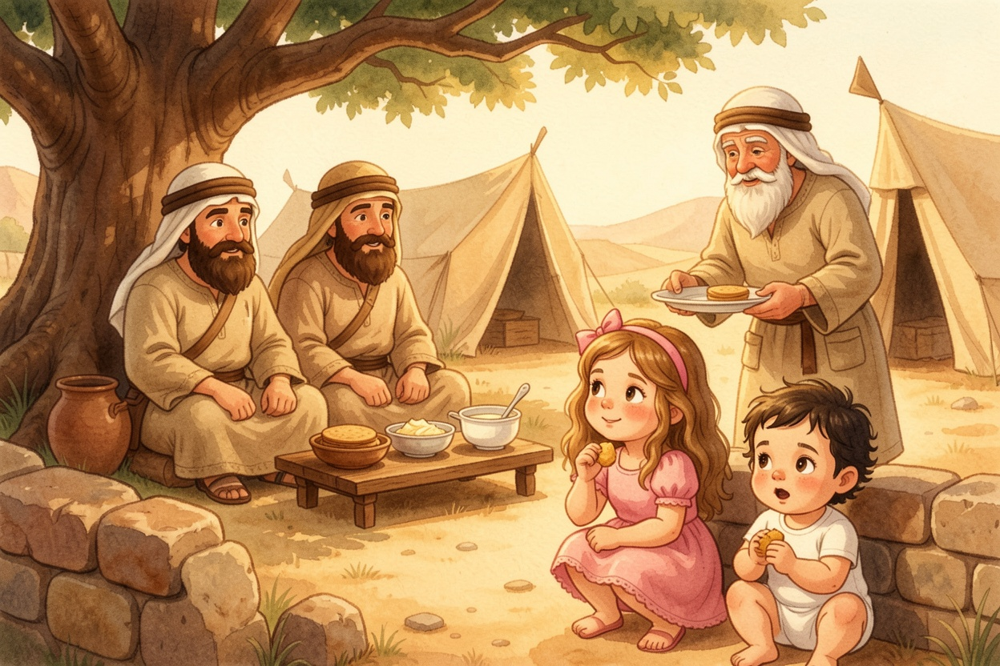
2A Feast in a Hurry
Bereshit 18:6-8A Feast in a Hurry
"A piece of bread" turned into a feast! Avraham hurried into the tent to Sarah: "Quick — three se'ahs of fine flour! Knead it and make cakes." Then he ran to the herd and picked a calf, tender and good, and gave it to a young man, who hurried to make it ready. Avraham brought butter and milk and the meat and set it all in front of his guests, and he stood beside them under the tree while they ate. Tzofia counted: "Hurry, run, quick, hurry!" Lielle grabbed a crumb of cake. Aviya laughed. "He said a little bread — and then he did a lot."
Look closely: Where did Avraham stand while his guests ate?
Beside them, under the tree (18:8).
From the Torah · Bereshit 18:6-8
6 וַיְמַהֵר אַבְרָהָם הָאֹהֱלָה אֶל־שָׂרָה וַיֹּאמֶר מַהֲרִי שְׁלֹשׁ סְאִים קֶמַח סֹלֶת לוּשִׁי וַעֲשִׂי עֻגוֹת׃
18:6 And Avraham hastened into the tent to Sara, and said, Make ready quickly three measures of fine meal, knead it, and make cakes.
7 וְאֶל־הַבָּקָר רָץ אַבְרָהָם וַיִּקַּח בֶּן־בָּקָר רַךְ וָטוֹב וַיִּתֵּן אֶל־הַנַּעַר וַיְמַהֵר לַעֲשׂוֹת אֹתוֹ׃
18:7 And Avraham ran to the herd, and fetched a calf tender and good, and gave it to the young man; and he hurried to prepare it.
8 וַיִּקַּח חֶמְאָה וְחָלָב וּבֶן־הַבָּקָר אֲשֶׁר עָשָׂה וַיִּתֵּן לִפְנֵיהֶם וְהוּא־עֹמֵד עֲלֵיהֶם תַּחַת הָעֵץ וַיֹּאכֵלוּ׃
18:8 And he took butter, and milk, and the calf which he had dressed, and set it before them; and he stood by them under the tree, and they ate.
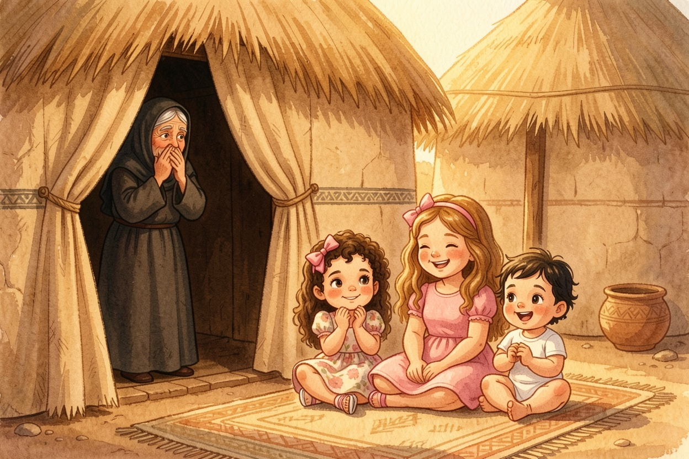
3Sarah Laughs
Bereshit 18:9-14Sarah Laughs
The guests asked, "Where is Sarah, your wife?" "Right here, in the tent," said Avraham. Then one said: "I will surely come back to you at this time next year — and Sarah your wife will have a son!" Sarah was listening at the door of the tent, behind him. Avraham and Sarah were old, very old. And Sarah laughed inside herself. Tzofia giggled too. Then Hashem said to Avraham: "Why did Sarah laugh? Is anything too wondrous for Hashem?" Aviya read that line twice. "Nothing is too wondrous," she said softly.
Look closely: What question did Hashem ask about Sarah's laughing?
"Is anything too wondrous for Hashem?" (18:14).
From the Torah · Bereshit 18:9-14
9 וַיֹּאמְרוּ אֵלָיו אַיֵּה שָׂרָה אִשְׁתֶּךָ וַיֹּאמֶר הִנֵּה בָאֹהֶל׃
18:9 And they said to him, Where is Sara thy wife? And he said, Behold, in the tent.
10 וַיֹּאמֶר שׁוֹב אָשׁוּב אֵלֶיךָ כָּעֵת חַיָּה וְהִנֵּה־בֵן לְשָׂרָה אִשְׁתֶּךָ וְשָׂרָה שֹׁמַעַת פֶּתַח הָאֹהֶל וְהוּא אַחֲרָיו׃
18:10 And he said, I will certainly return to thee at this season; and, lo, Sara thy wife shall have a son. And Sara heard it in the tent door, which was behind him.
11 וְאַבְרָהָם וְשָׂרָה זְקֵנִים בָּאִים בַּיָּמִים חָדַל לִהְיוֹת לְשָׂרָה אֹרַח כַּנָּשִׁים׃
18:11 Now Avraham and Sara were old, advanced in age; and it had ceased to be with Sara after the manner of women.
12 וַתִּצְחַק שָׂרָה בְּקִרְבָּהּ לֵאמֹר אַחֲרֵי בְלֹתִי הָיְתָה־לִּי עֶדְנָה וַאדֹנִי זָקֵן׃
18:12 Therefore Sara laughed within herself, saying, After I am grown old shall I have pleasure, my lord being old also?
13 וַיֹּאמֶר יְהוָה אֶל־אַבְרָהָם לָמָּה זֶּה צָחֲקָה שָׂרָה לֵאמֹר הַאַף אֻמְנָם אֵלֵד וַאֲנִי זָקַנְתִּי׃
18:13 And the Lord said to Avraham, Why did Sara laugh, saying, Shall I indeed bear a child, who am old?
14 הֲיִפָּלֵא מֵיְהוָה דָּבָר לַמּוֹעֵד אָשׁוּב אֵלֶיךָ כָּעֵת חַיָּה וּלְשָׂרָה בֵן׃
18:14 Is anything too hard for the Lord? At the time appointed I will return to thee, at this season, and Sara shall have a son.
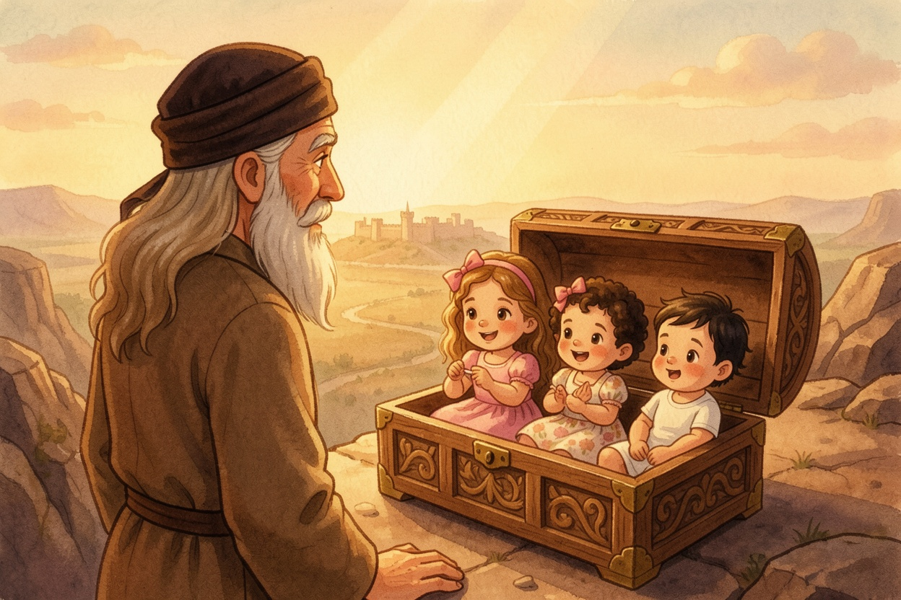
4What If There Are Ten?
Bereshit 18:23-32What If There Are Ten?
The men looked out toward Sedom, and Avraham walked with them to send them on their way. Hashem told Avraham how wicked Sedom was. Then Avraham came close and asked: "Will You sweep away the righteous with the wicked? What if there are fifty righteous people in the city? Shall the Judge of all the earth not do justice?" Hashem said: for fifty, I will spare the whole place. "And forty-five?" asked Avraham. "Forty? Thirty? Twenty?" Tzofia counted down on her fingers. "Ten?" And Hashem said: for the sake of the ten, I will not destroy it. Aviya let out her breath. "He kept asking," she said, "for people he didn't even know."
Look closely: What was the smallest number Avraham asked about?
Ten — "I will not destroy, for the sake of the ten" (18:32).
From the Torah · Bereshit 18:23-32
23 וַיִּגַּשׁ אַבְרָהָם וַיֹּאמַר הַאַף תִּסְפֶּה צַדִּיק עִם־רָשָׁע׃
18:23 And Avraham drew near, and said, Wilt Thou also destroy the righteous with the wicked?
24 אוּלַי יֵשׁ חֲמִשִּׁים צַדִּיקִם בְּתוֹךְ הָעִיר הַאַף תִּסְפֶּה וְלֹא־תִשָּׂא לַמָּקוֹם לְמַעַן חֲמִשִּׁים הַצַּדִּיקִם אֲשֶׁר בְּקִרְבָּהּ׃
18:24 Perhaps there are fifty righteous within the city: wilt Thou also destroy and not spare the place for the fifty righteous that are therein?
25 חָלִלָה לְּךָ מֵעֲשֹׂת כַּדָּבָר הַזֶּה לְהָמִית צַדִּיק עִם־רָשָׁע וְהָיָה כַצַּדִּיק כָּרָשָׁע חָלִלָה לָּךְ הֲשֹׁפֵט כָּל־הָאָרֶץ לֹא יַעֲשֶׂה מִשְׁפָּט׃
18:25 Far be it from Thee to do after this manner, to slay the righteous with the wicked: and that the righteous should be as the wicked, far be it from Thee: Shall not the Judge of all the earth do right?
26 וַיֹּאמֶר יְהוָה אִם־אֶמְצָא בִסְדֹם חֲמִשִּׁים צַדִּיקִם בְּתוֹךְ הָעִיר וְנָשָׂאתִי לְכָל־הַמָּקוֹם בַּעֲבוּרָם׃
18:26 And the Lord said, If I find in Sedom fifty just men within the city, then I will spare all the place for their sakes.
27 וַיַּעַן אַבְרָהָם וַיֹּאמַר הִנֵּה־נָא הוֹאַלְתִּי לְדַבֵּר אֶל־אֲדֹנָי וְאָנֹכִי עָפָר וָאֵפֶר׃
18:27 And Avraham answered and said, Behold now, I have taken upon me to speak to the Lord, who am but dust and ashes:
28 אוּלַי יַחְסְרוּן חֲמִשִּׁים הַצַּדִּיקִם חֲמִשָּׁה הֲתַשְׁחִית בַּחֲמִשָּׁה אֶת־כָּל־הָעִיר וַיֹּאמֶר לֹא אַשְׁחִית אִם־אֶמְצָא שָׁם אַרְבָּעִים וַחֲמִשָּׁה׃
18:28 perhaps there shall lack five of the fifty righteous: wilt Thou destroy all the city for lack of five? And He said, If I find there forty five, I will not destroy it.
29 וַיֹּסֶף עוֹד לְדַבֵּר אֵלָיו וַיֹּאמַר אוּלַי יִמָּצְאוּן שָׁם אַרְבָּעִים וַיֹּאמֶר לֹא אֶעֱשֶׂה בַּעֲבוּר הָאַרְבָּעִים׃
18:29 And he spoke to him yet again, and said, perhaps there shall be forty found there. And He said, I will not do it for the forty’s sake.
30 וַיֹּאמֶר אַל־נָא יִחַר לַאדֹנָי וַאֲדַבֵּרָה אוּלַי יִמָּצְאוּן שָׁם שְׁלֹשִׁים וַיֹּאמֶר לֹא אֶעֱשֶׂה אִם־אֶמְצָא שָׁם שְׁלֹשִׁים׃
18:30 And he said to him, Oh let not the Lord be angry, and I will speak: perhaps there shall thirty be found there. And He said, I will not do it, if I find thirty there.
31 וַיֹּאמֶר הִנֵּה־נָא הוֹאַלְתִּי לְדַבֵּר אֶל־אֲדֹנָי אוּלַי יִמָּצְאוּן שָׁם עֶשְׂרִים וַיֹּאמֶר לֹא אַשְׁחִית בַּעֲבוּר הָעֶשְׂרִים׃
18:31 And he said, Behold now, I have taken upon me to speak to the Lord: perhaps there shall be twenty found there. And He said, I will not destroy it for the twenty’s sake.
32 וַיֹּאמֶר אַל־נָא יִחַר לַאדֹנָי וַאֲדַבְּרָה אַךְ־הַפַּעַם אוּלַי יִמָּצְאוּן שָׁם עֲשָׂרָה וַיֹּאמֶר לֹא אַשְׁחִית בַּעֲבוּר הָעֲשָׂרָה׃
18:32 And he said, Oh let not the Lord be angry, and I will speak yet but this once: perhaps ten shall be found there. And He said, I will not destroy it for the sake of the ten.
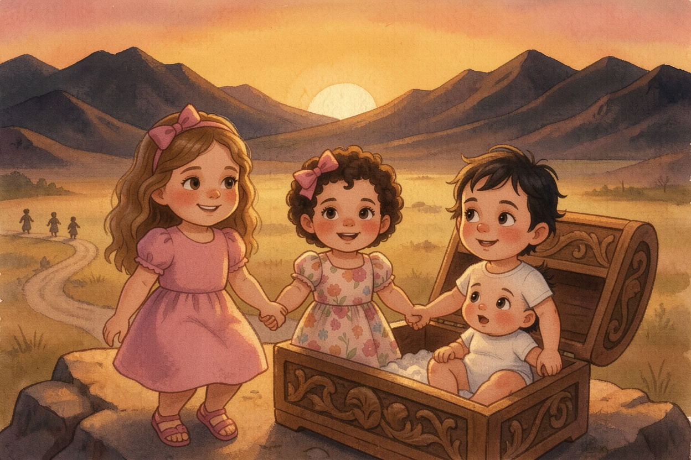
5Don't Look Back
Bereshit 19:15-17; Bereshit 19:24-26Don't Look Back
When dawn came, the angels hurried Lot: "Get up! Take your wife and your two daughters and go!" Lot lingered — so the men grabbed his hand, and his wife's hand, and his daughters' hands, because Hashem had pity on him, and they brought them out of the city. "Run for your life," they said. "Don't look behind you, and don't stop anywhere in the plain. Run to the mountain!" Then Hashem rained sulfur and fire on Sedom and Amorah. But Lot's wife looked back — and she became a pillar of salt. The sisters held on to the edge of the Parsha Box and did not look back either.
Look closely: What did the angels tell Lot not to do?
Not to look behind him and not to stop anywhere in the plain (19:17).
From the Torah · Bereshit 19:15-17; Bereshit 19:24-26
15 וּכְמוֹ הַשַּׁחַר עָלָה וַיָּאִיצוּ הַמַּלְאָכִים בְּלוֹט לֵאמֹר קוּם קַח אֶת־אִשְׁתְּךָ וְאֶת־שְׁתֵּי בְנֹתֶיךָ הַנִּמְצָאֹת פֶּן־תִּסָּפֶה בַּעֲוֺן הָעִיר׃
19:15 And when the morning arose, then the angels hastened Lot, saying, Arise, take thy wife, and thy two daughters, who are here; lest thou be consumed in the iniquity of the city.
16 וַיִּתְמַהְמָהּ וַיַּחֲזִקוּ הָאֲנָשִׁים בְּיָדוֹ וּבְיַד־אִשְׁתּוֹ וּבְיַד שְׁתֵּי בְנֹתָיו בְּחֶמְלַת יְהוָה עָלָיו וַיֹּצִאֻהוּ וַיַּנִּחֻהוּ מִחוּץ לָעִיר׃
19:16 And while he lingered, the men laid hold upon his hand, and upon the hand of his wife, and upon the hand of his two daughters; the Lord being merciful to him: and they brought him out, and set him outside the city.
17 וַיְהִי כְהוֹצִיאָם אֹתָם הַחוּצָה וַיֹּאמֶר הִמָּלֵט עַל־נַפְשֶׁךָ אַל־תַּבִּיט אַחֲרֶיךָ וְאַל־תַּעֲמֹד בְּכָל־הַכִּכָּר הָהָרָה הִמָּלֵט פֶּן־תִּסָּפֶה׃
19:17 And it came to pass, when they had brought them outside, that he said, Escape for thy life; look not behind thee, neither stay thou in all the plain; escape to the mountain, lest thou be consumed.
24 וַיהוָה הִמְטִיר עַל־סְדֹם וְעַל־עֲמֹרָה גָּפְרִית וָאֵשׁ מֵאֵת יְהוָה מִן־הַשָּׁמָיִם׃
19:24 Then the Lord rained upon Sedom and upon ῾Amora brimstone and fire from the Lord out of heaven;
25 וַיַּהֲפֹךְ אֶת־הֶעָרִים הָאֵל וְאֵת כָּל־הַכִּכָּר וְאֵת כָּל־יֹשְׁבֵי הֶעָרִים וְצֶמַח הָאֲדָמָה׃
19:25 and He overthrew those cities, and all the plain, and all the inhabitants of the cities, and that which grew upon the ground.
26 וַתַּבֵּט אִשְׁתּוֹ מֵאַחֲרָיו וַתְּהִי נְצִיב מֶלַח׃
19:26 But his wife looked back from behind him, and she became a pillar of salt.
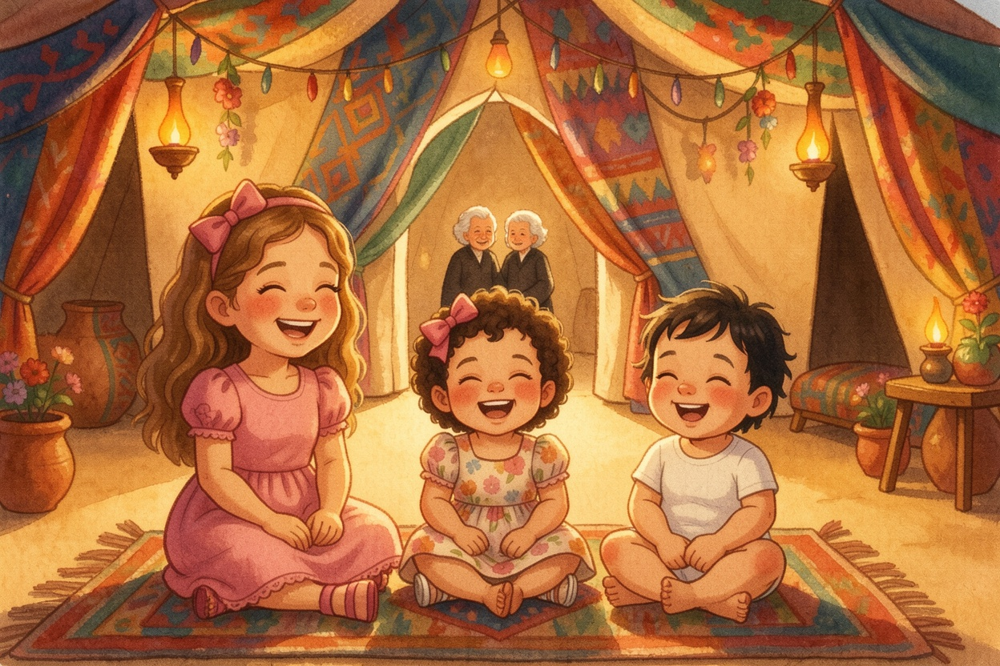
6A Baby Named Laughter
Bereshit 21:1-7A Baby Named Laughter
Then Hashem remembered Sarah, just as He had said. Sarah had a son for Avraham in his old age, at the very time God had promised. Avraham named him Yitzchak, and when the baby was eight days old, Avraham gave him a brit milah, just as God commanded. Avraham was one hundred years old! Sarah said: "God has made laughter for me — everyone who hears will laugh with me." And they all did. Tzofia laughed. Lielle laughed so hard she hiccupped. "Yitzchak," said Aviya, "means he will laugh."
Look closely: How old was Avraham when Yitzchak was born?
One hundred years old (21:5).
From the Torah · Bereshit 21:1-7
1 וַיהוָה פָּקַד אֶת־שָׂרָה כַּאֲשֶׁר אָמָר וַיַּעַשׂ יְהוָה לְשָׂרָה כַּאֲשֶׁר דִּבֵּר׃
21:1 And the Lord visited Sara as He had said, and the Lord did to Sara as He had spoken.
2 וַתַּהַר וַתֵּלֶד שָׂרָה לְאַבְרָהָם בֵּן לִזְקֻנָיו לַמּוֹעֵד אֲשֶׁר־דִּבֶּר אֹתוֹ אֱלֹהִים׃
21:2 For Sara conceived, and bore Avraham a son in his old age, at the set time of which God had spoken to him.
3 וַיִּקְרָא אַבְרָהָם אֶת־שֶׁם־בְּנוֹ הַנּוֹלַד־לוֹ אֲשֶׁר־יָלְדָה־לּוֹ שָׂרָה יִצְחָק׃
21:3 And Avraham called the name of his son that was born to him, whom Sara bore to him, Yiżĥaq.
4 וַיָּמָל אַבְרָהָם אֶת־יִצְחָק בְּנוֹ בֶּן־שְׁמֹנַת יָמִים כַּאֲשֶׁר צִוָּה אֹתוֹ אֱלֹהִים׃
21:4 And Avraham circumcised his son Yiżĥaq being eight days old, as God had commanded him.
5 וְאַבְרָהָם בֶּן־מְאַת שָׁנָה בְּהִוָּלֶד לוֹ אֵת יִצְחָק בְּנוֹ׃
21:5 And Avraham was a hundred years old, when his son Yiżĥaq was born to him.
6 וַתֹּאמֶר שָׂרָה צְחֹק עָשָׂה לִי אֱלֹהִים כָּל־הַשֹּׁמֵעַ יִצְחַק־לִי׃
21:6 And Sara said, God has made laughter for me, so that all that hear will laugh with me.
7 וַתֹּאמֶר מִי מִלֵּל לְאַבְרָהָם הֵינִיקָה בָנִים שָׂרָה כִּי־יָלַדְתִּי בֵן לִזְקֻנָיו׃
21:7 And she said, Who would have said to Avraham, that Sara should give children suck? for I have born him a son in his old age.
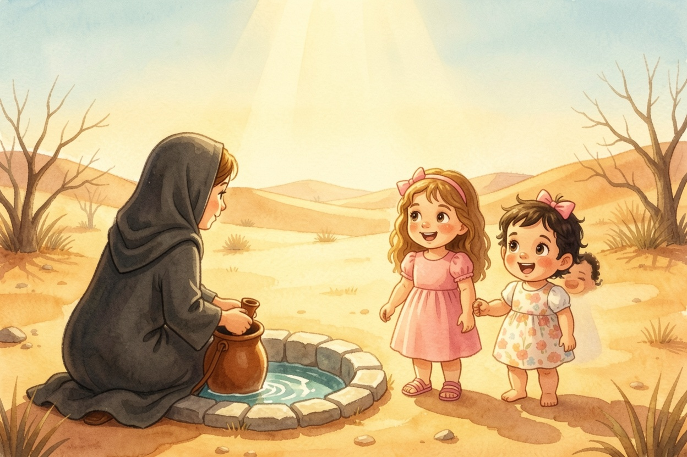
7A Well in the Wilderness
Bereshit 21:14-19A Well in the Wilderness
Avraham got up early, took bread and a skin of water and put it on Hagar's shoulder, and sent her away with her son, Yishmael. She wandered in the wilderness of Be'er Sheva. Then the water in the skin ran out. Hagar sat down far away and cried. But God heard the voice of the boy, and an angel of God called to Hagar from the sky: "What is wrong, Hagar? Don't be afraid — God has heard the boy's voice. Get up and lift him." Then God opened her eyes, and she saw a well of water! She filled the skin and gave the boy a drink. Tzofia let out a big breath. "God heard him," said Aviya. "Just like his name."
Look closely: What did Hagar see when God opened her eyes?
A well of water (21:19).
From the Torah · Bereshit 21:14-19
14 וַיַּשְׁכֵּם אַבְרָהָם בַּבֹּקֶר וַיִּקַּח־לֶחֶם וְחֵמַת מַיִם וַיִּתֵּן אֶל־הָגָר שָׂם עַל־שִׁכְמָהּ וְאֶת־הַיֶּלֶד וַיְשַׁלְּחֶהָ וַתֵּלֶךְ וַתֵּתַע בְּמִדְבַּר בְּאֵר שָׁבַע׃
21:14 And Avraham rose up early in the morning, and took bread, and a bottle of water, and gave it to Hagar, putting it on her shoulder, and the child, and sent her away: and she departed, and wandered in the wilderness of Be᾽er-sheva.
15 וַיִּכְלוּ הַמַּיִם מִן־הַחֵמֶת וַתַּשְׁלֵךְ אֶת־הַיֶּלֶד תַּחַת אַחַד הַשִּׂיחִם׃
21:15 And the water was spent in the bottle, and she cast the child under one of the shrubs.
16 וַתֵּלֶךְ וַתֵּשֶׁב לָהּ מִנֶּגֶד הַרְחֵק כִּמְטַחֲוֵי קֶשֶׁת כִּי אָמְרָה אַל־אֶרְאֶה בְּמוֹת הַיָּלֶד וַתֵּשֶׁב מִנֶּגֶד וַתִּשָּׂא אֶת־קֹלָהּ וַתֵּבְךְּ׃
21:16 And she went, and sat her down over against him a good way off, as it were a bowshot: for she said, Let me not see the death of the child. And she sat over against him, and lifted up her voice, and wept.
17 וַיִּשְׁמַע אֱלֹהִים אֶת־קוֹל הַנַּעַר וַיִּקְרָא מַלְאַךְ אֱלֹהִים אֶל־הָגָר מִן־הַשָּׁמַיִם וַיֹּאמֶר לָהּ מַה־לָּךְ הָגָר אַל־תִּירְאִי כִּי־שָׁמַע אֱלֹהִים אֶל־קוֹל הַנַּעַר בַּאֲשֶׁר הוּא־שָׁם׃
21:17 And God heard the voice of the lad; and the angel of God called to Hagar out of heaven, and said to her, What ails thee, Hagar? fear not; for God has heard the voice of the lad where he is.
18 קוּמִי שְׂאִי אֶת־הַנַּעַר וְהַחֲזִיקִי אֶת־יָדֵךְ בּוֹ כִּי־לְגוֹי גָּדוֹל אֲשִׂימֶנּוּ׃
21:18 Arise, lift up the lad, and hold him in thy hand; for I will make him a great nation.
19 וַיִּפְקַח אֱלֹהִים אֶת־עֵינֶיהָ וַתֵּרֶא בְּאֵר מָיִם וַתֵּלֶךְ וַתְּמַלֵּא אֶת־הַחֵמֶת מַיִם וַתַּשְׁקְ אֶת־הַנָּעַר׃
21:19 And God opened her eyes, and she saw a well of water; and she went, and filled the bottle with water, and gave the lad drink.
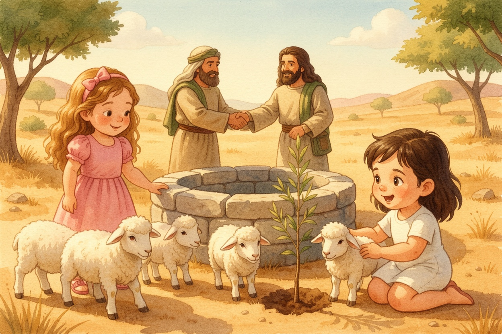
8Seven Lambs and a Tree
Bereshit 21:27-33Seven Lambs and a Tree
Avimelech, the king of Gerar, came to make a covenant with Avraham. Avraham gave him sheep and cattle, and the two of them made a covenant. Then Avraham set seven ewe lambs apart. "Take these seven lambs from me," he said, "as a witness that I dug this well." That is why the place is called Be'er Sheva — because there the two of them swore. Tzofia counted the lambs: "One, two, three… seven!" Then Avraham planted a tamarisk tree, an eshel, in Be'er Sheva, and called there in the name of Hashem, God of the world. Lielle patted the little tree.
Look closely: Why did Avraham give Avimelech seven ewe lambs?
As a witness that Avraham dug the well (21:30).
From the Torah · Bereshit 21:27-33
27 וַיִּקַּח אַבְרָהָם צֹאן וּבָקָר וַיִּתֵּן לַאֲבִימֶלֶךְ וַיִּכְרְתוּ שְׁנֵיהֶם בְּרִית׃
21:27 And Avraham took sheep and oxen, and gave them to Avimelekh; and both of them made a covenant.
28 וַיַּצֵּב אַבְרָהָם אֶת־שֶׁבַע כִּבְשֹׂת הַצֹּאן לְבַדְּהֶן׃
21:28 And Avraham set seven ewe lambs of the flock by themselves.
29 וַיֹּאמֶר אֲבִימֶלֶךְ אֶל־אַבְרָהָם מָה הֵנָּה שֶׁבַע כְּבָשֹׂת הָאֵלֶּה אֲשֶׁר הִצַּבְתָּ לְבַדָּנָה׃
21:29 And Avimelekh said to Avraham, What mean these seven ewe lambs which thou hast set by themselves?
30 וַיֹּאמֶר כִּי אֶת־שֶׁבַע כְּבָשֹׂת תִּקַּח מִיָּדִי בַּעֲבוּר תִּהְיֶה־לִּי לְעֵדָה כִּי חָפַרְתִּי אֶת־הַבְּאֵר הַזֹּאת׃
21:30 And he said, For these seven ewe lambs shalt thou take of my hand, that they may be a witness to me, that I have dug this well.
31 עַל־כֵּן קָרָא לַמָּקוֹם הַהוּא בְּאֵר שָׁבַע כִּי שָׁם נִשְׁבְּעוּ שְׁנֵיהֶם׃
21:31 Therefore he called that place Be᾽er-sheva; because there they swore both of them.
32 וַיִּכְרְתוּ בְרִית בִּבְאֵר שָׁבַע וַיָּקָם אֲבִימֶלֶךְ וּפִיכֹל שַׂר־צְבָאוֹ וַיָּשֻׁבוּ אֶל־אֶרֶץ פְּלִשְׁתִּים׃
21:32 Thus they made a covenant at Be᾽er-sheva; then Avimelekh rose up, and Pikhol the captain of his host, and they returned to the land of the Pelishtim.
33 וַיִּטַּע אֶשֶׁל בִּבְאֵר שָׁבַע וַיִּקְרָא־שָׁם בְּשֵׁם יְהוָה אֵל עוֹלָם׃
21:33 And Avraham planted a tamarisk in Be᾽er-sheva, and called there on the name of the Lord, the everlasting God.
After these things, God tested Avraham. "Avraham!" He called. "Hineni — here I am," said Avraham. Then God said: "Take your son, your only one, whom you love — Yitzchak — and go to the land of Moriyah, and bring him up there as an offering on one of the mountains that I will tell you." Tzofia grabbed her sister's hand. "Is it going to be okay?" Aviya looked at the next line. "Keep watching," she said. Avraham got up early in the morning, saddled his donkey, took two young men and Yitzchak, split the wood, and set out.
Look closely: What did Avraham answer when God called him?
"Hineni — here I am" (22:1).
From the Torah · Bereshit 22:1-3
1 וַיְהִי אַחַר הַדְּבָרִים הָאֵלֶּה וְהָאֱלֹהִים נִסָּה אֶת־אַבְרָהָם וַיֹּאמֶר אֵלָיו אַבְרָהָם וַיֹּאמֶר הִנֵּנִי׃
22:1 And it came to pass after these things, that God did test Avraham, and said to him, Avraham: and he said, Here I am!
2 וַיֹּאמֶר קַח־נָא אֶת־בִּנְךָ אֶת־יְחִידְךָ אֲשֶׁר־אָהַבְתָּ אֶת־יִצְחָק וְלֶךְ־לְךָ אֶל־אֶרֶץ הַמֹּרִיָּה וְהַעֲלֵהוּ שָׁם לְעֹלָה עַל אַחַד הֶהָרִים אֲשֶׁר אֹמַר אֵלֶיךָ׃
22:2 And He said, Take now thy son, thy only son Yiżĥaq, whom thou lovest, and get thee into the land of Moriyya; and offer him there for a burnt offering upon one of the mountains which I will tell thee of.
3 וַיַּשְׁכֵּם אַבְרָהָם בַּבֹּקֶר וַיַּחֲבֹשׁ אֶת־חֲמֹרוֹ וַיִּקַּח אֶת־שְׁנֵי נְעָרָיו אִתּוֹ וְאֵת יִצְחָק בְּנוֹ וַיְבַקַּע עֲצֵי עֹלָה וַיָּקָם וַיֵּלֶךְ אֶל־הַמָּקוֹם אֲשֶׁר־אָמַר־לוֹ הָאֱלֹהִים׃
22:3 And Avraham rose up early in the morning, and saddled his ass, and took two of his young men with him, and Yiżĥaq his son, and broke up the wood for the burnt offering, and rose up, and went to the place of which God had told him.
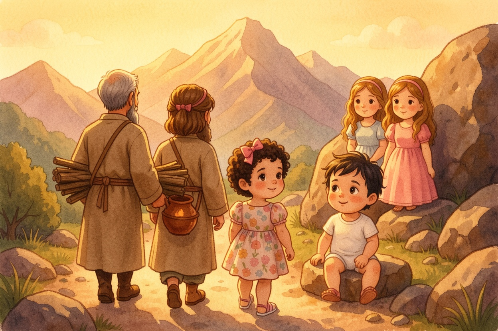
10The Two of Them Together
Bereshit 22:4-8The Two of Them Together
On the third day, Avraham lifted his eyes and saw the place from far away. "Stay here with the donkey," he told the young men. "The boy and I will go up there, bow down, and come back to you." Avraham put the wood on Yitzchak, and he took the fire, and the two of them walked on together. Then Yitzchak said, "My father!" "Here I am, my son." "Here is the fire and the wood — but where is the lamb for the offering?" Avraham said: "God will see to the lamb, my son." Aviya read the last words very quietly: "And the two of them walked on together."
Look closely: What did Yitzchak ask his father?
"Here is the fire and the wood, but where is the lamb for the offering?" (22:7).
From the Torah · Bereshit 22:4-8
4 בַּיּוֹם הַשְּׁלִישִׁי וַיִּשָּׂא אַבְרָהָם אֶת־עֵינָיו וַיַּרְא אֶת־הַמָּקוֹם מֵרָחֹק׃
22:4 Then on the third day Avraham lifted up his eyes, and saw the place afar off.
5 וַיֹּאמֶר אַבְרָהָם אֶל־נְעָרָיו שְׁבוּ־לָכֶם פֹּה עִם־הַחֲמוֹר וַאֲנִי וְהַנַּעַר נֵלְכָה עַד־כֹּה וְנִשְׁתַּחֲוֶה וְנָשׁוּבָה אֲלֵיכֶם׃
22:5 And Avraham said to his young men, stay here with the ass; and I and the lad will go yonder and prostrate ourselves, and come again to you.
6 וַיִּקַּח אַבְרָהָם אֶת־עֲצֵי הָעֹלָה וַיָּשֶׂם עַל־יִצְחָק בְּנוֹ וַיִּקַּח בְּיָדוֹ אֶת־הָאֵשׁ וְאֶת־הַמַּאֲכֶלֶת וַיֵּלְכוּ שְׁנֵיהֶם יַחְדָּו׃
22:6 And Avraham took the wood of the burnt offering, and laid it upon Yiżĥaq his son; and he took the fire in his hand, and the knife; and they went both of them together.
7 וַיֹּאמֶר יִצְחָק אֶל־אַבְרָהָם אָבִיו וַיֹּאמֶר אָבִי וַיֹּאמֶר הִנֶּנִּי בְנִי וַיֹּאמֶר הִנֵּה הָאֵשׁ וְהָעֵצִים וְאַיֵּה הַשֶּׂה לְעֹלָה׃
22:7 And Yiżĥaq spoke to Avraham his father, and said, My father: and he said, Here I am, my son. And he said, Behold the fire and the wood: but where is the lamb for a burnt offering?
8 וַיֹּאמֶר אַבְרָהָם אֱלֹהִים יִרְאֶה־לּוֹ הַשֶּׂה לְעֹלָה בְּנִי וַיֵּלְכוּ שְׁנֵיהֶם יַחְדָּו׃
22:8 And Avraham said, My son, God will provide himself a lamb for a burnt offering: so they went both of them together.
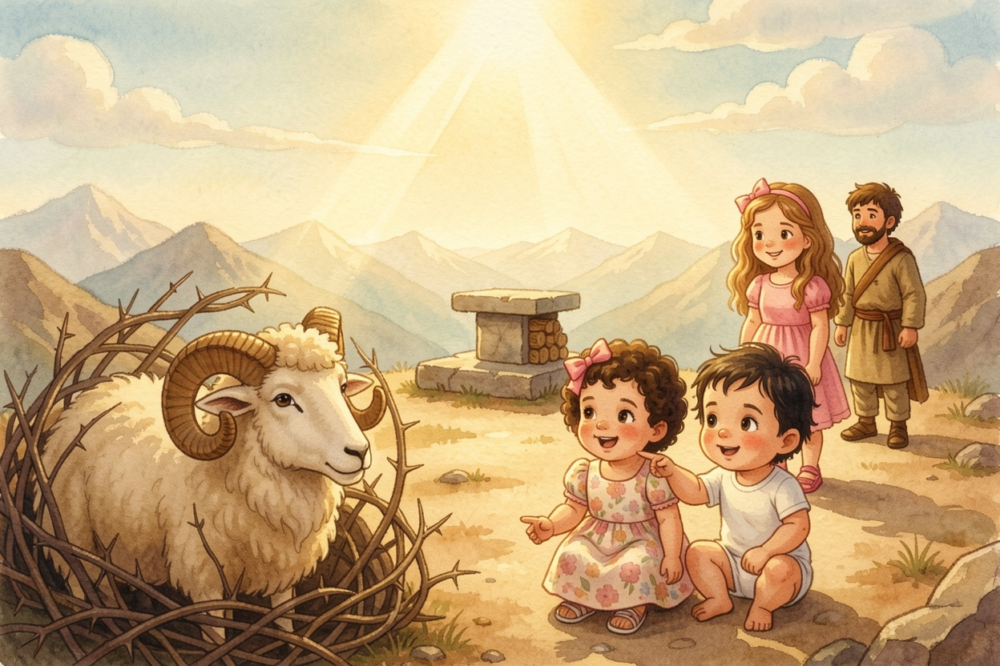
11A Ram in the Thicket
Bereshit 22:9-14A Ram in the Thicket
They came to the place God had told him, and Avraham built the altar there and laid out the wood. Tzofia could hardly breathe. Then an angel of Hashem called to him from the sky: "Avraham! Avraham!" "Here I am." "Do not put your hand on the boy, and do nothing to him — for now I know that you fear God." Avraham lifted his eyes — and there was a ram, caught in the thicket by its horns! Avraham brought the ram as an offering instead of his son. He named the place "Hashem Yir'eh" — Hashem will see. Lielle pointed at the ram and said, "Baa!"
Look closely: Where was the ram caught?
In the thicket, by its horns (22:13).
From the Torah · Bereshit 22:9-14
9 וַיָּבֹאוּ אֶל־הַמָּקוֹם אֲשֶׁר אָמַר־לוֹ הָאֱלֹהִים וַיִּבֶן שָׁם אַבְרָהָם אֶת־הַמִּזְבֵּחַ וַיַּעֲרֹךְ אֶת־הָעֵצִים וַיַּעֲקֹד אֶת־יִצְחָק בְּנוֹ וַיָּשֶׂם אֹתוֹ עַל־הַמִּזְבֵּחַ מִמַּעַל לָעֵצִים׃
22:9 And they came to the place which God had told him of; and Avraham built an altar there, and laid the wood in order, and bound Yiżĥaq his son, and laid him on the altar upon the wood.
10 וַיִּשְׁלַח אַבְרָהָם אֶת־יָדוֹ וַיִּקַּח אֶת־הַמַּאֲכֶלֶת לִשְׁחֹט אֶת־בְּנוֹ׃
22:10 And Avraham stretched out his hand, and took the knife to slay his son.
11 וַיִּקְרָא אֵלָיו מַלְאַךְ יְהוָה מִן־הַשָּׁמַיִם וַיֹּאמֶר אַבְרָהָם אַבְרָהָם וַיֹּאמֶר הִנֵּנִי׃
22:11 And an angel of the Lord called to him out of heaven, and said, Avraham, Avraham: and he said, Here I am.
12 וַיֹּאמֶר אַל־תִּשְׁלַח יָדְךָ אֶל־הַנַּעַר וְאַל־תַּעַשׂ לוֹ מְאוּמָּה כִּי עַתָּה יָדַעְתִּי כִּי־יְרֵא אֱלֹהִים אַתָּה וְלֹא חָשַׂכְתָּ אֶת־בִּנְךָ אֶת־יְחִידְךָ מִמֶּנִּי׃
22:12 And he said, Lay not thy hand upon the lad, neither do anything to him: for now I know that thou fearest God, seeing thou hast not withheld thy son, thy only son from me.
13 וַיִּשָּׂא אַבְרָהָם אֶת־עֵינָיו וַיַּרְא וְהִנֵּה־אַיִל אַחַר נֶאֱחַז בַּסְּבַךְ בְּקַרְנָיו וַיֵּלֶךְ אַבְרָהָם וַיִּקַּח אֶת־הָאַיִל וַיַּעֲלֵהוּ לְעֹלָה תַּחַת בְּנוֹ׃
22:13 And Avraham lifted up his eyes, and looked and behold behind him a ram caught in the thicket by his horns: and Avraham went and took the ram, and offered him up for a burnt offering in place of his son.
14 וַיִּקְרָא אַבְרָהָם שֵׁם־הַמָּקוֹם הַהוּא יְהוָה יִרְאֶה אֲשֶׁר יֵאָמֵר הַיּוֹם בְּהַר יְהוָה יֵרָאֶה׃
22:14 And Avraham called the name of that place Adonay-yir᾽e: as it is said to this day, In the mount the Lord will appear.
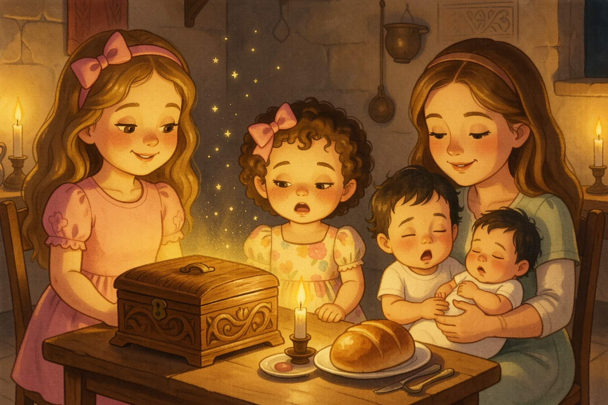
12Stars, Sand — and Rivka
Bereshit 22:15-18; Bereshit 22:20-23Stars, Sand — and Rivka
The angel of Hashem called again: "Because you did this, I will bless you, and make your offspring as many as the stars of the sky and the sand on the seashore — because you listened to My voice." Then Avraham heard news from far away: his brother Nachor had a big family now, and Nachor's son Betuel had a daughter named Rivka. Aviya smiled at the name. The sisters climbed back into the Parsha Box, and whoosh — they were home at the Shabbat table, and the box was small again. "Next week," said Aviya, "we meet Rivka."
Look closely: What two things did the angel compare Avraham's offspring to?
The stars of the sky and the sand on the seashore (22:17).
From the Torah · Bereshit 22:15-18; Bereshit 22:20-23
15 וַיִּקְרָא מַלְאַךְ יְהוָה אֶל־אַבְרָהָם שֵׁנִית מִן־הַשָּׁמָיִם׃
22:15 And the angel of the Lord called to Avraham out of heaven the second time,
16 וַיֹּאמֶר בִּי נִשְׁבַּעְתִּי נְאֻם־יְהוָה כִּי יַעַן אֲשֶׁר עָשִׂיתָ אֶת־הַדָּבָר הַזֶּה וְלֹא חָשַׂכְתָּ אֶת־בִּנְךָ אֶת־יְחִידֶךָ׃
22:16 and said, By myself have I sworn, says the Lord, because thou hast done this thing, and hast not withheld thy son, thy only son:
17 כִּי־בָרֵךְ אֲבָרֶכְךָ וְהַרְבָּה אַרְבֶּה אֶת־זַרְעֲךָ כְּכוֹכְבֵי הַשָּׁמַיִם וְכַחוֹל אֲשֶׁר עַל־שְׂפַת הַיָּם וְיִרַשׁ זַרְעֲךָ אֵת שַׁעַר אֹיְבָיו׃
22:17 that I will exceedingly bless thee, and I will exceedingly multiply thy seed as the stars of the heaven, and as the sand which is upon the sea shore; and thy seed shall possess the gate of its enemies;
18 וְהִתְבָּרֲכוּ בְזַרְעֲךָ כֹּל גּוֹיֵי הָאָרֶץ עֵקֶב אֲשֶׁר שָׁמַעְתָּ בְּקֹלִי׃
22:18 and in thy seed shall all the nations of the earth be blessed; because thou hast obeyed My voice.
20 וַיְהִי אַחֲרֵי הַדְּבָרִים הָאֵלֶּה וַיֻּגַּד לְאַבְרָהָם לֵאמֹר הִנֵּה יָלְדָה מִלְכָּה גַם־הִוא בָּנִים לְנָחוֹר אָחִיךָ׃
22:20 And it came to pass after these things, that it was told Avraham, saying, Behold Milka, she also has born children to thy brother Naĥor;
21 אֶת־עוּץ בְּכֹרוֹ וְאֶת־בּוּז אָחִיו וְאֶת־קְמוּאֵל אֲבִי אֲרָם׃
22:21 ῾Uż his firstborn, and Buz his brother, and Qemu᾽el the father of Aram,
22 וְאֶת־כֶּשֶׂד וְאֶת־חֲזוֹ וְאֶת־פִּלְדָּשׁ וְאֶת־יִדְלָף וְאֵת בְּתוּאֵל׃
22:22 and Kesed, and Ḥazo, and Pildash, and Yidlaf, and Betu᾽el.
23 וּבְתוּאֵל יָלַד אֶת־רִבְקָה שְׁמֹנָה אֵלֶּה יָלְדָה מִלְכָּה לְנָחוֹר אֲחִי אַבְרָהָם׃
22:23 And Betu᾽el begot Rivqa: these eight did Milka bear to Naĥor, Avraham’s brother.
The End
Three sisters ride the Parsha Box to Avraham's tent — and watch a promise come true. Read it again this Shabbat — and see how much more you can find in the pesukim.
Pesukim from Sefaria (Tanach with Nikkud · The Koren Jerusalem Bible). Illustrations made with FLUX.2 [klein]. Peshat fidelity checked with Jev.